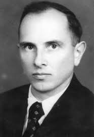

Степа́н Андрі́йович Банде́ра (1 січня 1909, с. Старий Угринів, Калуський повіт, Королівство Галичини та Володимирії, Австро-Угорщина, нині Калуського району, Івано-Франківська область, Україна — 15 жовтня 1959, Мюнхен, Баварія, ФРН) — український політичний діяч, один із радикальних та чільних ідеологів і теоретиків українського націоналістичного руху XX століття[1], після розколу Організації українських націоналістів — голова Проводу ОУН-Б[2]. Разом з Миколою Лебедем був одним зі організаторів вбивства

Інші діячі повстанського руху: